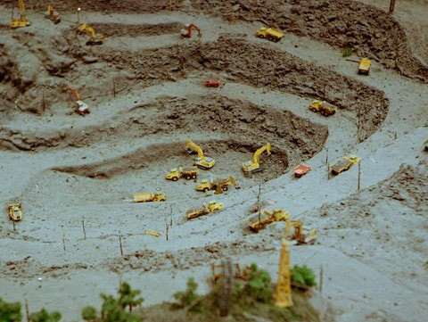
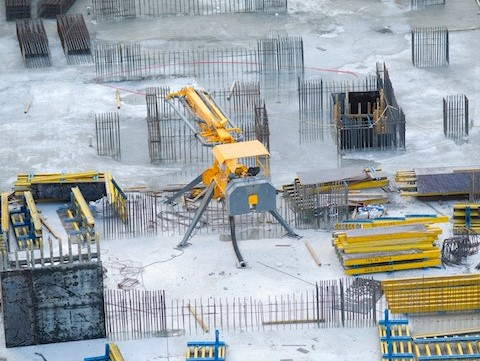
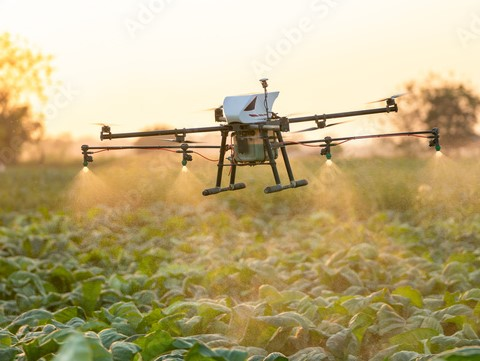
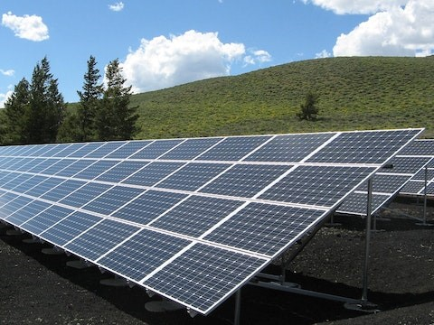
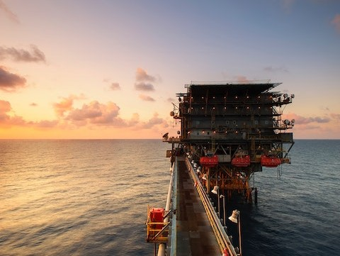

Drone aerial mapping offers a revolutionary way to capture highly detailed, accurate, and up-to-date imagery of the world around us. With the ability to cover vast areas quickly and efficiently, drones are the perfect tool for a variety of mapping applications, from land surveying and agriculture to construction and environmental monitoring.
With a drone, you can easily collect high-resolution imagery and create highly accurate 3D models, maps, and surveys that provide valuable insights and help you make more informed decisions. Whether you're a professional surveyor, farmer, construction worker, or simply someone interested in exploring the world from a new perspective, a drone is an indispensable tool that can take your mapping and surveying efforts to the next level.
Investing in a drone for aerial mapping is not only a smart decision for your business or personal projects, but it also offers an exciting and innovative way to explore the world around you. So why wait? Invest in a drone today and see the world like never before.

Drone aerial mapping is a powerful tool used in mining and quarrying industries to create accurate and up-to-date maps of mining sites. By using drones equipped with high-resolution cameras, companies can quickly and safely collect data and create 3D models of their operations. This allows for more efficient planning, monitoring, and management of the site, leading to increased productivity and cost savings.

In the construction and survey industry, drone aerial mapping is a valuable tool for surveying land and creating detailed maps and models of construction sites. By using drones equipped with advanced sensors and cameras, surveyors and construction professionals can quickly and accurately collect data and create detailed 3D models of the terrain and structures.

In the agriculture industry, drone aerial mapping is used to create detailed maps and monitor crop health. Drones equipped with specialized sensors and cameras can capture high-resolution images and data on plant health, moisture levels, and other factors that affect crop growth. This information can be used to create detailed maps of farmland, allowing farmers to identify areas that require attention and optimize crop management practices.

In the solar energy field, drone aerial mapping is used to survey and design solar power systems. Drones equipped with specialized sensors and cameras can capture detailed images and data on the terrain, including elevation, slope, and shading. This information can be used to create accurate 3D models of the site, allowing solar energy professionals to optimize the design and placement of solar panels for maximum efficiency

In the oil and gas industry, drone aerial mapping is used for pipeline inspection and monitoring, as well as for surveying and mapping exploration sites. Drones equipped with specialized sensors and cameras can capture high-resolution images and data on pipeline infrastructure, including potential leaks and other issues.
Drones can be used to make 3D models by capturing aerial imagery and data using specialized cameras and sensors. The collected data can be processed using photogrammetry software to create a detailed 3D model of the area or object of interest. The software uses algorithms to stitch together the images and data, creating a digital replica that can be viewed and analyzed from different angles and perspectives.
In the railway industry, drone aerial mapping is used for railway track inspection and maintenance. Drones equipped with high-resolution cameras and LiDAR sensors can capture detailed images and data on the condition of railway tracks, including potential defects and damage. This information can be used to identify and prioritize maintenance needs, reducing the risk of derailments and other safety hazards.